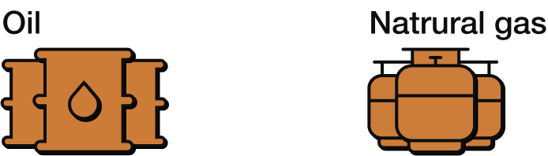
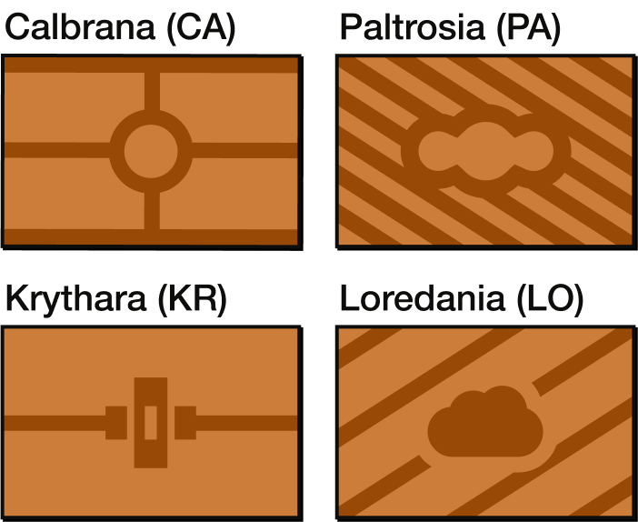
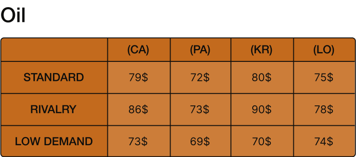
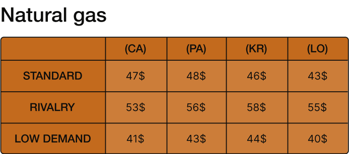

Fossil Fuels
Our nation, like most countries that consume fossil fuels, must import these resources, whose prices fluctuate significantly due to demand, supply and geopolitical balances that can drastically change costs with little or no warning.
Instructions
Determine which of the following nations is more convenient to establish a fossil fuel import agreement with.
Start by understanding what type of resource the investment involves.

Two agreements with two different nations will be available, which you can identify through their flags.

The resource price changes depending on the exporter and its geopolitical condition.
Cross-reference the nation with its geopolitical situation to find the resource price per unit.
Select the most advantageous option.

